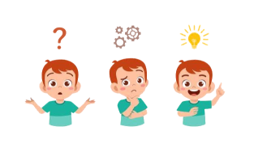

Universidad Nacional Autonoma de México
Faculad de ingenieria
Estructuras Discretas
Profesor:
Orlando Zaldivar Zamorategui
Sistemas algebraicos
Grupo:06
Alumnos:
Romero Ramirez Alejandro
Ruiz Garcia Arturo
objetivo
El Objetivo de este Proyecto es construir un Tutorial Web que desarrolle y ejercite conceptos clave de la Lógica, rama científica que estudia la estructura o formas del pensamiento para obtener criterios de verdad a partir de sus leyes y principios. El curso de Estructuras Discretas se enfoca en la Lógica Proposicional, la cual se enfoca en el Lenguaje Matemático a través de proposiciones, que pueden tener un valor de verdad (T) o falsedad (F). Partiendo de ahí, se incluyen, entre estos conceptos, tres muy importantes para la solución de problemas computacionales: sistemas algebraicos, sistemas para el razonamiento automático y, ligado a éste último, el método de deducción paso a paso.
